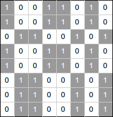

Code Jam 2014 - World Finals
Analysis: Checkerboard Matrix
Video of Igor Naverniouk’s explanation.
Let’s start by making some observations about a checkerboard matrix:
- Since a matrix is of dimension 2*N by 2*N, each row and each column have the same number of 0s and 1s.
- Corners of a checkerboard matrix always have two 0s and two 1s, and if we take any submatrix with at least 2 rows and 2 columns (not necessarily square) there will be an even number of 0s and 1s in the corners.

Now, let’s analyze what happens when we swap 2 rows or 2 columns. Such an operation doesn’t change the number of 0s and 1s in a row or column, but more importantly corners of any submatrix will still have even number of 0s and 1s. Indeed, by swapping rows or columns we transform any submatrix with corners located on both of the swapped rows or columns and it will not change the numbers in the corners. This means that any matrix for which the above properties doesn’t hold cannot be transformed into a checkerboard matrix.
Let’s take a matrix for which the above properties hold and consider a pair of rows (the same arguments hold for columns). We can show that all rows that start with 1 will actually be equal to each other and so will be all rows that start with 0 (let’s call these sets of rows A and B). Additionally, corresponding (same column) numbers of a type A and type B row will be different. Thus A rows will be the inverse of B rows. Let’s prove this by considering two rows of the same type. Let’s choose a submatrix with 2 corners fixed in the first column and the others in some other column. By definition of row types, we have 2 corners in the first column equal to each other, but then by the property of a checkerboard matrix we cannot have two different numbers in the other corners as we would get an odd number of 0s or 1s. Therefore, all numbers of same type rows (i.e. A or B) are the same. Analogously we can show that A rows and B rows are the inverse of each other. Since in a checkerboard matrix each row and column has the same number of 0s and 1s, the number of rows of each type is the same. The same arguments hold for columns.
Here is an example of a matrix obtained by permutation of rows and columns of a checkerboard matrix, which demonstrates the facts we just proved:
In a checkerboard matrix, type A and type B rows (and columns) alternate. We note that transformations of rows and columns are independent and we can first find the optimal number of row swaps, then the optimal number of column swaps, and then sum these numbers. Let us denote a type A row (or column) as ‘A’, and a type B row (or column) as ‘B’. Therefore the problem generalizes to the following problem: Given a sequence of 'A' and 'B' characters where the number of ‘A’s is the same as the number of ‘B’s, swap pairs of elements to make the ‘A’s and ‘B’s alternate. We have 2 choices on which letter goes first, either ‘A’ or ‘B’. We can try both. Given the desired order is fixed we can take a pair of ‘A’ and ‘B’ that are in the wrong place and swap them and record the number of swaps.
To conclude, here is the algorithm for the whole problem:
- Start by assigning the first row to type A
-
Go over all rows and compare them element by element with the first row
- if rows equal each other, they are of the same type
- if they are the inverse of each other, they are of type B
- otherwise the given matrix cannot be transformed into a checkerboard matrix and we can output “IMPOSSIBLE”
- Check that the sets A and B have the same number of rows, otherwise output “IMPOSSIBLE”
- The minimum number of row (similarly for column) swaps is equal to min(nswaps_A, nswaps_B) where nswaps_X is the number of wrong positions for type X if we assume that the first row is of type X. The number of wrong positions for type X is equal to the number of rows of type X that reside at even positions. Remember that type A and B must alternate.
- Repeat 1-4 for columns.
- Output the sum of the answers for rows and columns.
Sample implementation in Python 3:
def count_swaps(pos):
nswaps = 0
for i in pos:
if i % 2 == 0:
nswaps = nswaps + 1
return nswaps
def inverse(A):
return [chr(ord('0') + ord('1') - ord(c)) for c in A]
# min_swaps returns minimum swaps required to
# form alternating rows. If B is an invalid matrix,
# returns -1 to denote an impossible case.
def min_swaps(M, N):
# Step 1.
typeA = M[0]
typeB = inverse(typeA)
pos_A = []
pos_B = []
for i in range(2 * N):
# Step 2 a.
if M[i] == typeA:
pos_A.append(i)
# Step 2 b.
elif M[i] == typeB:
pos_B.append(i)
# Step 2 c.
else:
return -1
# Step 3.
if len(pos_A) != len(pos_B):
return -1
# Step 4.
return min(count_swaps(pos_A), count_swaps(pos_B))
def solve(M, N):
# Step 1-4.
row_swaps = min_swaps(M, N)
if row_swaps == -1:
return "IMPOSSIBLE"
Mt = [list(i) for i in zip(*M)] # Transpose matrix M
# Step 5.
col_swaps = min_swaps(Mt, N)
if col_swaps == -1:
return "IMPOSSIBLE"
return row_swaps + col_swaps
for tc in range(int(input())):
N = int(input())
M = []
for i in range(2 * N):
M.append(list(input()))
print("Case #%d: %s" % (tc + 1, solve(M, N)))